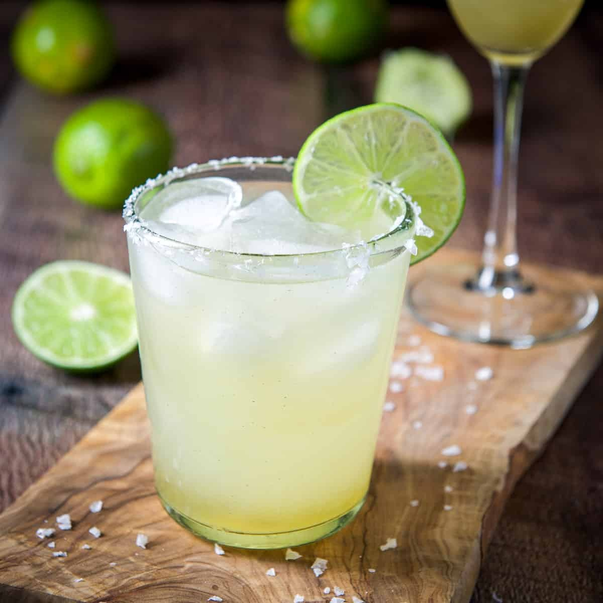

The Margarita

Overview
Fresh lime juice, triple sec, and good tequila are all you need to make the best margarita possible.
A good-quality tequila needs no sugar, beyond what's in the triple sec, to balance the acidity of lime juice.
Cointreau makes for a balanced, smooth margarita without taking away from the tequila.
Shopping List
- 2 ounces blanco tequila
- 1 ounce Cointreau
- 1 ounce fresh lime juice
- 1 tablespoon course salt
- Garnish: 1 lime wedge and 1 lime wheel
Recipe
- Run lime wedge around outer rim of cocktail glass and dip rim into salt
- In a coktail shaker, combine tequila, Cointreau, and lime juice
- Fill shaker with ice and shake until thoroughly chilled
- Strain into prepared glass
- Garnish: Slice lime wheel and add to glass rim